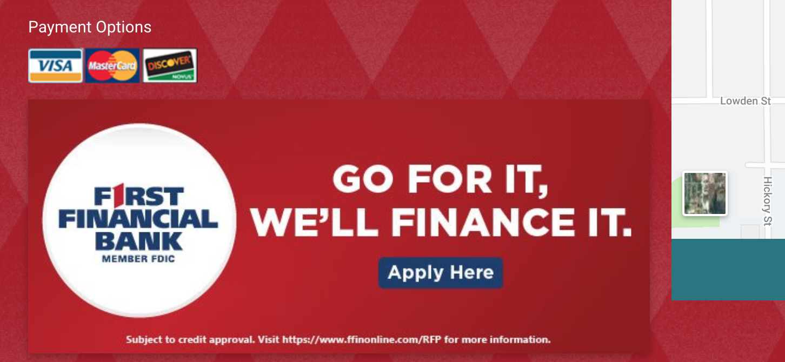
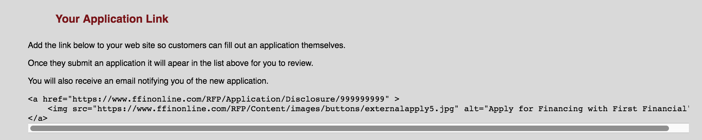
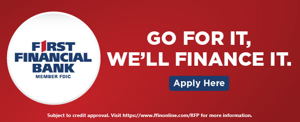
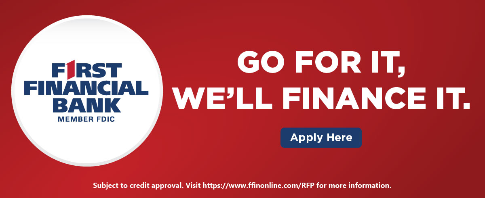
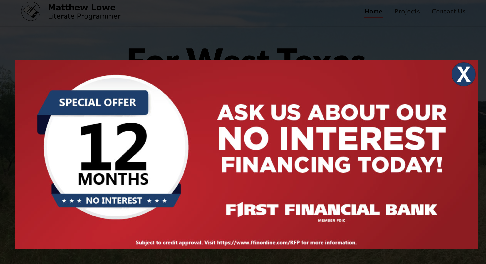

Banners and Ads
There are several ways to put a funding banner, link or popup on your website. The first thing you'll need to figure out is who is going to make the change to the site.
If you'd like First Financial Bank to make the change, please contact the First Finance support team. We offer this service at no charge to you.
If you're comfortable making the change yourself, you can find instructions below.

Sometimes, you just want to add a "financing" button to the homepage, so visitors know you offer financing through First Financial Bank. That's why First Finance provides an HTML code snippet that you can drop into any web page.
To get the HTML snippet for your customers, log in to the dealer dashboard, scroll to the bottom of the page and copy out the HTML for the financing button. Then paste that HTML into the code of your page.

If you don't have a place to insert HTML or don't know how to do it, you can download one of the images below, drop it into to one of your pages and link it directly to the First Finance online application. To download the image, right-click and choose "Save Image As...".
You'll also need the dealer's application link, which you can find in the HTML sample on the dashboard. Or you can contact First Finance support to get the application link for your business.



Often, you want to drive sales with a free financing offer, and to do that you really need to make sure your customers see the offer. To help, First Finance provides a financing popup that will appear the first time a customer hits your homepage.
If you have a WordPress website, you can use our WordPress ad plugin.
If you don't have a WordPress website, you can use our jQuery plugin instead.
You can use the plugin settings to control how often your visitors see the ad, what ads the page will appear on, and whether the customer is redirected to another page when they click the ad.
If you're having trouble, please contact First Finance support or open an issue on the plugin's GitHub page.